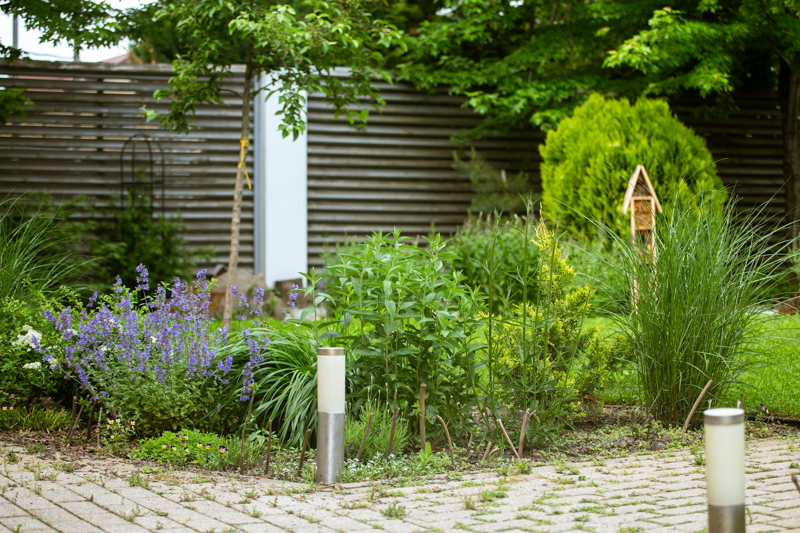
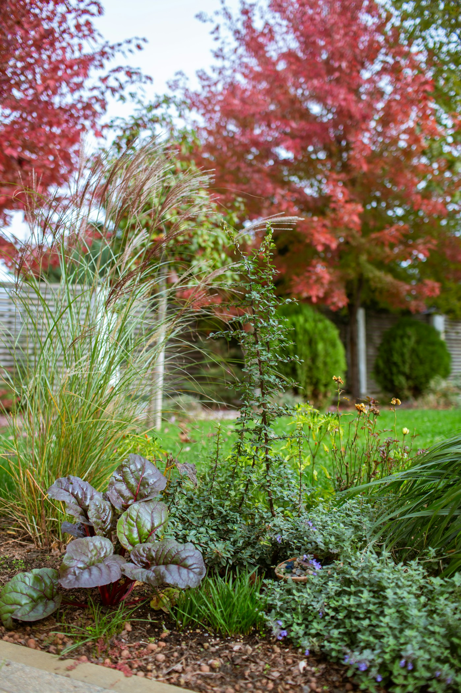

Gartenunterhalt und Pflanzarbeiten in Winterthur.
Grün-Beck, Wasserfurristrasse 38. Rufen Sie an oder schreiben Sie.

Platzhalterfoto. Fotos von Grün-Beck ersetzen es.
Arbeiten
Zwei Arbeiten nennt der Eintrag auf local.ch.
Gartenunterhalt
Laut Eintrag auf local.ch.
Pflanzarbeiten
Laut Eintrag auf local.ch.
Weiteres
Vorschlag: Rasen, Hecken, Beete. Von Grün-Beck zu bestätigen.
Ein Betrieb aus Winterthur
- Adresse
- Wasserfurristrasse 38, 8406 Winterthur
- Postadresse
- 8401 Winterthur
- Kontakt
- Karl Beck
- Einsatzgebiet
- von Grün-Beck zu ergänzen
